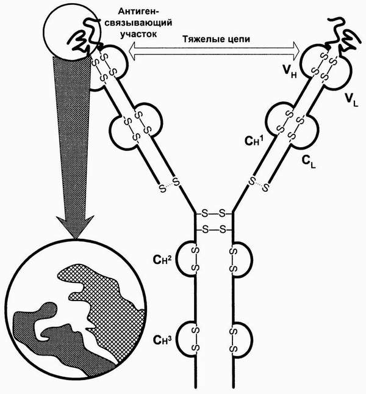
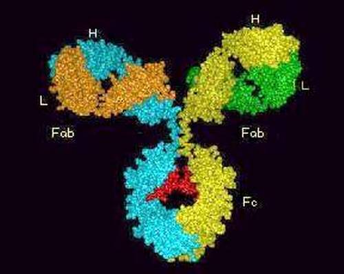
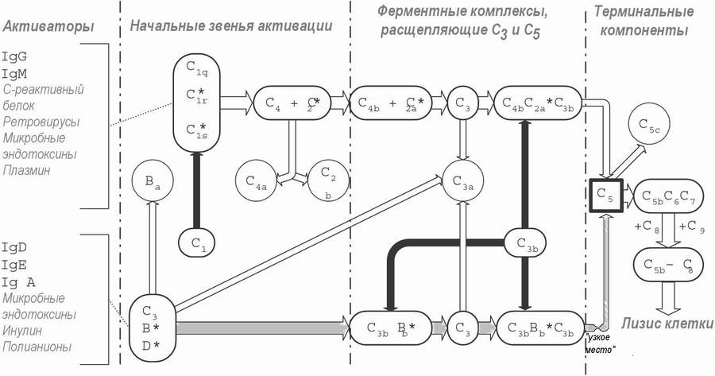
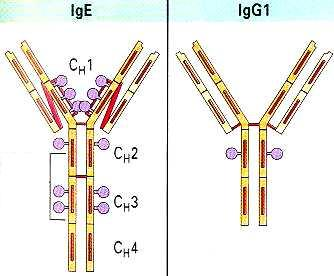

Иммуноглобулины как маркеры и распознающие молекулы.
Иммуноглобулины (Ig) или, антитела, являются продуктами функционально активных В-клеток или плазмацитов. Они состоят из полипептидных цепей различной конфигурации. Имеется 5 основных классов (или, иммунологических изотипов) Ig, различают также и подклассы (Ч.Литмен, Р.Гуд, 1978).

Существование антител, как “оторвавшихся от клетки рецепторов” постулировал впервые П.Эрлих (1901). Структура иммуноглобулинов была, в основных чертах, расшифрована Р.Р. Портером и Дж.М. Эйдельманом (1957-1962).
Молекулы Ig состоят из полипептидных цепей, соединенных друг с другом дисульфидными мостиками. Они имеют характерную пространственную конфигурацию, содержат также углеводородные группировки, хотя последние непосредственно не относятся к специфической части антител.

Тяжелые (Н) и легкие (L) цепи составляют основной каркас Ig. IgG может служить примером типовой молекулы Ig и состоит из двух одинаковых тяжелых и двух идентичных легких цепей (рис. 85). Разные участки целых молекул Ig выполняют различные функции. Участки с NH2-концами тяжелых и легких цепей являются вариабельными, так как по структуре они отличаются у разных антител. Они образуют уникальную по форме полость, которую заполняет соответствующий эпитоп. Этот конец молекулы служит антиген-фиксирующим фрагментом и несёт иммунологическую специфичность Ig. Эпитоп-фиксирующий участок отличается у каждого антитела уникальной специфичности и называется паратопом. Паратоп, в свою очередь, обладает антигенностью. Паратоп или его часть, участвующая в иммунологических взаимодействиях в качестве антигена, называется идиотопом, набор идиотопов - идиотипом. Групповые конституциональные варианты антигенной структцры тяжёлых цепей называются аллотипами.
Гидроксильный СООН-конец молекулы Ig (Fc-фрагмент от английского fragment crystallizable) имеет одинаковую структуру у антител каждого класса и подкласса и разную - у антител, принадлежащих к разным подклассам и классам. Этот константный участок выполняет различные биологические функции в разных классах Ig. Например, уникальная способность IgG транспортироваться через плаценту зависит от структуры Fc-фрагмента молекулы IgG. Fc-фрагмент содержит участки связывания комплемента, стафилококкового протеина А, стрептококкового белка G, а также распознаётся рецепторами макрофагов, NK и других клеток при фагоцитозе, антителозависимой цитотоксичности и других эффекторных функциях иммуноглобулинов, опосредованных через клетки. Пепсин переваривает иммуноглобулины с высвобождением (Fab)’2 и Fc-фрагментов, а папаин гидролизирует шарнирную область молекулы антител, причём появляются два моно-Fab-фрагмента и Fc-фрагмент, вкупе со смесью коротких пептидов (Р.Памфри, 1979).

Каждая тяжелая и легкая цепь является полипептидом, сформированным путем транскрипции и трансляции определенного количества генов, кодирующих постоянные и вариабельные участки Ig, посредством сложной системы генного сплайсинга (С.Тонегава, 1991). Легкие цепи содержат как вариабельные, так и константные участки, первые находятся на NH2- конце молекулы. Существуют легкие цепи двух классов: k- и l-. Тяжелые цепи также содержат вариабельные участки в NH2- концах и константные участки на СООН-концах. Существует 5 классов или изотипов тяжелых цепей, а именно: g, a, m, d и e - соответственно для IgG, IgA, IgM, IgD и IgE. Разница между константными участками Н-цепей объясняет различные биологические функции этих классов Ig.
IgG - наиболее широко распространенный мономерный класс иммуноглобулинов сыворотки, электрофоретически мигрирующий в её g-фракции. Это важный противовирусный и противобактериальный фактор и потенциальный опсонин, а также главный участник вторичного иммунного ответа и единственный класс антител- нейтрализатор токсинов. Это уникальный Ig, проходящий через плаценту и способный обеспечивать пассивный иммунитет новорожденным от 3 до 6 месяцев. Его приблизительный период полураспада в сыворотке - 3 недели, он является одним из двух классов Ig, которые активируют комплемент по классическому пути. Существует 4 подкласса IgG: IgG1, IgG2, IgG3 и IgG4. Они отличаются небольшими деталями Н-цепи Fc-фрагмента. Антитела IgG2 чаще являются опсонинами и отвечают на попадание токсинов и декстранов. Анти-Rh-антитела чаще являются подклассами IgG1 и IgG2. IgG4 у человека имеют значительный тропизм к тучным клеткам, в то время. как IgG1 не способны связываться мастоцитами, а у грызунов, в частности, морской свинки - дело обстоит наоборот.
IgA у человека в сыворотке присутствует на 80% как мономер. У млекопитающих это, в основном, димер. У IgA имеются специфические черты, связанные со слизистыми оболочками. IgA - главный секреторный продукт системы лимфоидной ткани верхних и нижних дыхательных путей, урогенитального и пищеварительного трактов, фактор иммуной защиты кожных секретов, молозива и молока. В основном IgA, особенно в пищеварительном тракте, имеет специальную конфигурацию, которая препятствует протеолитическому перевариванию. Такой секреторный IgA содержит 2 IgA молекулы, соединенные в комплекс специальной полипептидной цепью, и именно этот участок и называется секреторным. Предполагается, что антитела класса IgA особенно эффективны в обеспечении местной антимикробной защиты в различных участках слизистых. Существует 2 подкласса IgA: IgA1 и IgA2.При электрофорезе они мигрируют не только в g- но и в b-глобулиновой фракции.
IgM (макроглобулин) является крупной молекулой, состоящей из 5 субъединиц, каждая из которых содержит две m-цепи и две легкие цепи. Эти субъединицы образуют структуру наподобие тележного колеса с Fc-фрагментами в центре, связанными вместе соединительными цепями. IgM присутствует в цитоплазме и на поверхности В-клеток на ранних стадиях их созревания, и это первый класс антител, продуцируемый активированными В-клетками во время первичного иммунного ответа. Макроглобулин, в основном, присутствует в крови, в отличие от IgG, распределённого между кровью и тканями равновесно. IgM - действенный активатор классического пути комплемента, эффективный опсонин и агглютинин. К этому классу относятся такие специальные антитела как холодовые агглютинины, гетерофильные антитела и изогемагглютинины.Иммунный ответ на Т-независимые антигены (см. выше раздел “Антигены и их распознавание в иммунной системе”), по преимуществу, проявляется в синтезе IgM. Интересно, что вопреки традиционной исторической характеристике антител, как g-глобулинов, данный класс иммуноглобулинов мигрирует при электрофорезе, в основном, в b-глобулиновой и даже, частично, a2-глобулиновой фракциях.
IgD состоит из двух d-цепей и двух легких цепей. Он обнаруживается на поверхности незрелых В-клеток и, в низких концентрациях, в сыворотке. Истинное биологическое значение IgD в настоящее время изучено недостаточно. М.Оуэн и М.Стьюард полагают, что он участвует в антигензависимой дифференцировке В-лимфоцитов (1994).
IgE - реагины. К классу IgE относятся классические кожно-тропные антитела, играющие важную роль в реакциях анафилактической гиперчувствительности I типа.

Большинство их биологических свойств связано с тем фактом, что Fc-фрагмент цепи этой молекулы очень прочно связывается с Fce-I рецепторами тучных клеток (мастоцитов) и базофилов.
Рецепторы IgE более низкого сродства, по ходу анафилаксии, возникают также у эозинофилов и тромбоцитов. Когда Fab-фрагмент этих, связанных с клеткой IgE специфически перекрывается соответствующим антигеном, происходит дегрануляция клеток и высвобождение медиаторов анафилаксии. В небольших количествах IgE присутствует в плазме крови и тканях.
На лимфоцитах и моноцитах находится другой рецептор к IgE (FcR-2), образующий гораздо менее прочную связь.
В таблице 25 приведены основные свойства и функции классов и подклассов Ig.
Таблица 4
Свойства иммуноглобулинов человека
Класс антител |
Среднесывороточная концентра-ция у взрослых, мг/дл |
Фиксация комплемента |
Транспла-центарный перенос |
Константа осаждения, S / молекуляр-ная масса, кД |
Период полужизни в плазме, дни |
IgG общий |
1150 |
++ |
+ |
7/150 |
- |
IgG1 |
615 |
++ |
+ |
7/150 |
21 |
IgG2 |
295 |
+ |
+ |
7/150 |
20 |
IgG3 |
35 |
+++ |
+ |
7/150 |
7 |
IgG4 |
18 |
- |
+ |
7/150 |
21 |
IgM |
50 |
+++ |
- |
19/900 |
5-10 |
IgA плазмы |
190 |
- |
- |
7/160 |
6 |
IgA секреторный |
5 |
- |
- |
11/380 |
- |
IgD |
3 |
- |
- |
7/180 |
3 |
IgE |
0,03 |
- |
- |
8/190 |
2 |
Разнообразие антител выражается в том, что каждый индивидуальный В-лимфоцит и все его клональные потомки вырабатывают иммуноглобулин с уникальной структурой антиген-связывающих участков, то есть идиотипы не повторяются. Вариабельные участки кодируются V-генами.
Это было бы невозможно обеспечить, если бы каждый иммуноглобулин кодировался от начала, до конца своей молекулы отдельным геном. С.Тонегава (1988) установил, что гетерогенность антител обеспечивается благодаря тому, что отдельные составные части каждого из их полипептидов кодируются разными генами зародышевой линии, любой из которых существует как множественный мультиген и подвергается соматическому мутированию. Большое значение при возникновении разнообразия антител (а также Т-клеточных рецепторов) имеют транспозоны - мобильные диспергированные участки генома, способные менять местоположение в хромосомах (Б.МакКлинток, 1983). Оборотной стороной работы этого эффективного механизма варьирования программ является относительно высокий риск таких транспозиций, которые приводят к экспрессии в лимфоидных клетках онкогенов. Это делает лимфомы и лимфолейкозы одними из наиболее частых неопластических процессов.
Структура целостной молекулы антитела варьирует из-за перетасовки и слияния (сплайсинга) иРНК, полученных путём альтернативной транскрипции этих вариантов. Разнообразие генов иммуноглобулинов, возможно, возникло вследствие дивергентной эволюции генов их филогенетических предшественников - ферментов гликозилтрансфераз (С.Рот, 1985). Количество возможных комбинаций первичных структур и конформаций третичных структур во много раз превышает число генов отдельных доменов иммуноглобулинов, заложенных в геноме. Кроме альтернативной транскрипции участков мультигенов и их соматического мутирования, дополнительным источником разнообразия антител служит непостоянство точки сшивания полипептидов, составляющих целостную молекулу иммуноглобулина.
Варианты кодов для лёгких цепей хранятся в хромосомах 2 и 22, а для тяжёлых - в хромосоме 14.
Все эти источники вариации антител могут быть формализованы следующим образом:
- существует много альтернативных вариантов генов зародышевой линии для вариабельных участков цепей иммуноглобулинов
- при сборке полной тяжёлой цепи иммуноглобулина идёт свободная рекомбинация продуктов одного из многих V, многих J, и многих D-генов, при сборке лёгкой цепи - такая же рекомбинация продуктов V и J -регионов.
- рекомбинация предусматривает сшивку в непостоянной точке, отчего структура антитела меняется
- V-гены иммуноглобулинов наиболее склонны к соматическому мутированию среди всех элементов генома, поэтому 9 из 10 клонов В-клеток несут гены, отсутствовавшие в наборе зародышевой линии
- Любая Н-цепь может комбинироваться с любой L-цепью.
- Для константных регионов тяжелых цепей также имеется несколько вариантов альтернативных генов, от которых зависит принадлежность антител одной антигенной специфичности к разным классам и подклассам. Один и тот же клон В-клеток может переключать синтез с одного класса и подкласса антител на другой, не меняя специфичности, путём полиаденилирования первичного транскрипта, содержащего РНК-копии разных генов, в альтернативных точках, отчего транскрипт при сплайсинге теряет разные участки.
|
|
|
|
|